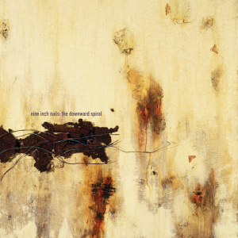

- ALBUM OF THE WEEK -
"The Downward Spiral" by Nine Inch Nails

Release Date: March 8th 1994
Genre: Industrial
Length: 65:02
- TRACK LISTING -
#1 - Mr. Self Destruct
#2 - Piggy
#3 - Heresy
#4 - March of the Pigs
#5 - Closer
#6 - Ruiner
#7 - The Becoming
#8 - I Do Not Want This.
#9 - Big Man With A Gun
#10 - A Warm Place
#11 - Eraser
#12 - Reptile
#13 - The Downward Spiral
#14 - Hurt
Favourite Track: #10 - A Warm Place
Rating: 10/10